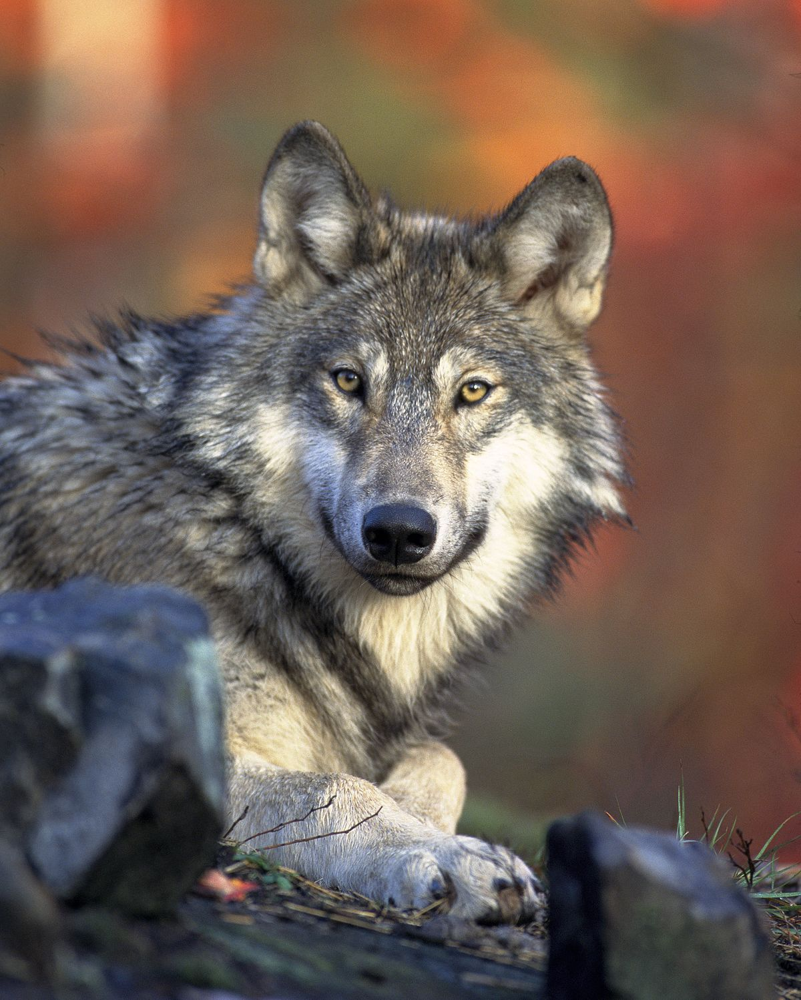

The wolf (Canis lupus), also known as the gray wolf or grey wolf, is a large canine native to Eurasia and North America. It is the largest extant member of Canidae, males averaging 40 kg (88 lb) and females 37 kg (82 lb). On average, wolves measure 105–160 cm (41–63 in) in length and 80–85 cm (31–33 in) at shoulder height.
 Learn More